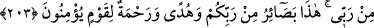

KUR’AN’I DİNLEMEK
VE SUSMAK
203. Onlara bir mucize getirmediğin zaman, (ötekiler gibi) onu da derleyip
getirseydin ya! derler. De ki: Ben ancak Rabbimden bana vahyolunana uyarım. Bu
(Kur’an), Rabbinizden gelen basîretlerdir (kalb gözlerini açan beyanlardır); inanan
bir kavim için hidayet ve rahmettir.
204. Kur’an okunduğu zaman onu dinleyin ve susun ki size merhamet edilsin.
Vahiy geciktiği zaman “onlara” yani Mekkeli’lere Kur’an’dan “bir ayet” getir veya
“Falan ölüyü dirilt, bizimle konuşsun ve bizi dâvet ettiğin konularda seni doğrulasın.”
diyerek istedikleri gibi bir mucize “getirmediğin zaman” daha önce Kur’an’dan
okuduğun diğer ayetler gibi “onu da derleyip getirseydin ya!” kendi kafandan
uydurarak bir araya toplasaydın ya! “derler.” Çünkü onlar Kur’an’ın tümünü düzmece,
iftira olarak görüyorlardı. Bu tefsir, “
” kelimesinin toplamak mânâsına göredir.
Bu kelimenin seçmek (ıstıfâ) mânâsı da vardır. Buna göre mânâ: “İnmesi beklenen
ayeti veya gösterilmesi istenen mucizeyi diğer mühim işlerinin arasından seçip
Rabb’inden isteseydin ya!” olur.
Onları reddetmek üzere “de ki: “Ben ancak Rabb’imden bana vahyolunana
uyarım.” Benim yaptığım ancak tâbi olmaktır. Bu ayetleri uyduran ve ileri süren bir
kimse değilim.
“Bu” Kur’ân, “Rabb’inizden gelen basîretlerdir” ki kalblerin gözleri yerindedir.
Hak o gözlerle görülür ve doğru onlarla idrak edilir. “ve inanan bir kavim için hidayet
ve rahmettir.” Çünkü onun nurlarından istifade ederler ve eserlerini ganimet bilirler.
Ayette işaret vardır ki, peygamber ilâhî vahye tâbî olduğu gibi, velî de rabbânî ilhama
tabidir. Çünkü nefislerin tezkiyesi ancak vahiyle ve ilhamla mümkün olabilir. Eğer nebi
veya velî hidayete uymazsa hevasına uymuş olur ki böyle kimseler irşada salahiyetli
olmadıkları gibi aynı zamanda hain durumuna düşerler. Hâin ise nübüvvet ve velayetin
sırlarına emîn olamaz.
İlim ehlinden biri şöyle anlatır: Masîfe’de (Şam civarında bir belde) bulunuyordum.
Baktım iki adam Allah ile halvet hakkında konuşuyorlar. Oradan ayrılmak istediklerinde